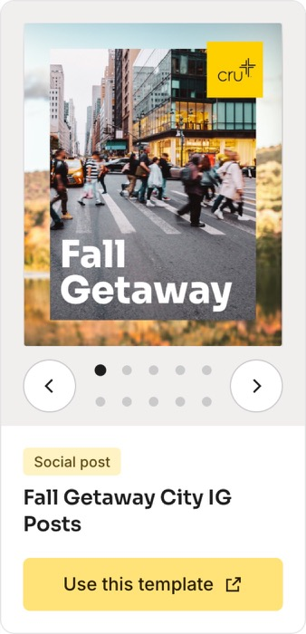

Design Templates
A gallery of Cru's Canva templates. Anyone can tap a design and get their own copy in Canva, even with a free account. No Canva Enterprise seat needed.
2 minutes 20 seconds, music and no talking. The written version is below.
Cru makes beautiful, on-brand designs in Canva. But Canva Enterprise costs a lot, so each staff team gets one account, and only that one person can get to the designs.
Most movements are led by volunteers and students with no account at all. So they make their own, and a lot of the time it is not on brand.
Canva has a template link. Anyone can open it and get their own copy. We used to share these in a Google Doc full of links, which was hard to search.
Now they live in one gallery. Pick your event, find the poster, post or flyer, and tap Use this template. The original never changes.
Every design is a card with its pictures, what kind it is, and one big button.

Designs are grouped by event, newest first, with filters for posters, social posts and flyers, and a search box.
Canva opens a copy that is yours. Change the words, the photos, even the language.
A simple manager page: paste the Canva link, drop in a picture, save. No spreadsheet editing.
Hosted for free on GitHub Pages, with nothing to install.
The list of designs lives in a Sheet, read by a small Google script.
Adding a design is a form, not a spreadsheet. It shows up for everyone right away.
The gallery can be closed with one setting while it gets ready, without taking the site down.